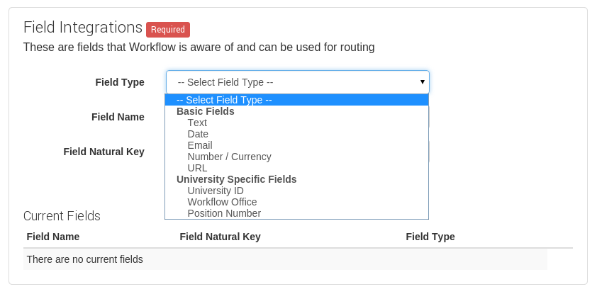
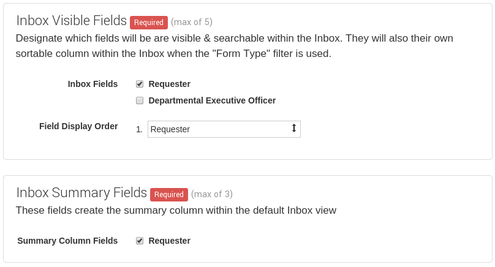
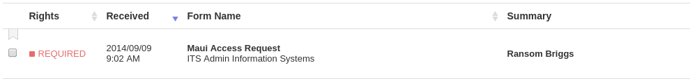
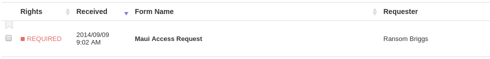
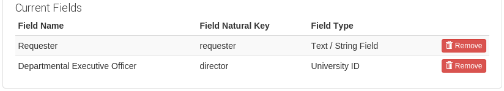
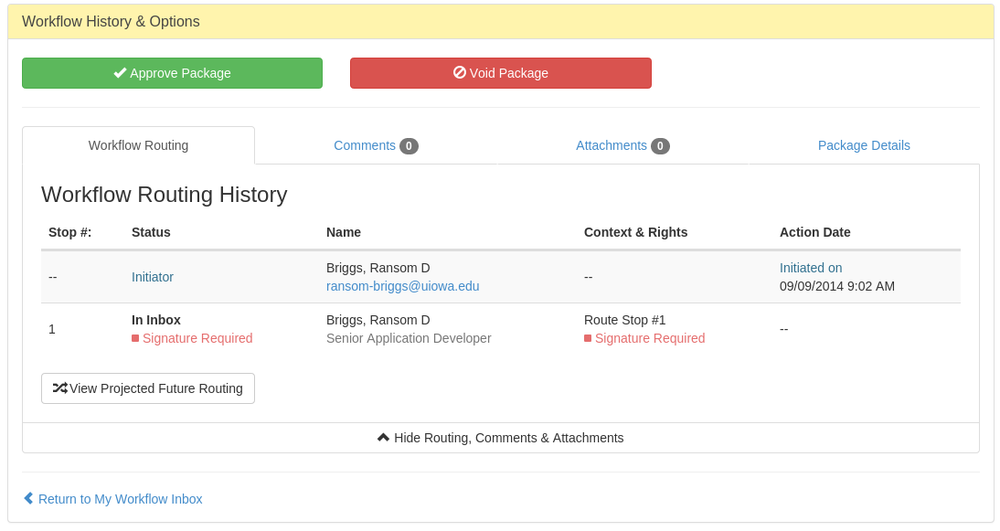

Workflow Tech Overview
Ransom Briggs / ransom-briggs@uiowa.edu
Components
- Workflow Configuration
- OAuth2 Authorization & SSO
- Integrations
- Workflow Widget
- Routing Redirects and Callbacks
Workflow Configuration

Inbox Field Selection

Inbox Summary Fields


OAuth2 Authorization & SSO
- Authorization framework
- login.uiowa.edu
- Single Sign On
Developer Integrations
- Create a package with data
- Update package data

Workflow Widget
- Similar to Facebook Graph Api
- Embed via Javascript snippet
- Lives in iframe inserted into page
- Authenticated via SSO
Workflow Widget - Approval & Void

Routing Redirect
- Approver Signature URL
- Redirects from Inbox
formId=2&packageId=10001295&signatureId=2051&rights=SIGNATURE
- Redirects From History
formId=2&packageId=10000211&rights=HISTORY
- Should verify using API that the person has access
Routing Callbacks
- Sent with OAuth header
- Package Routing Complete Callback URL
- Package Voided Callback URL